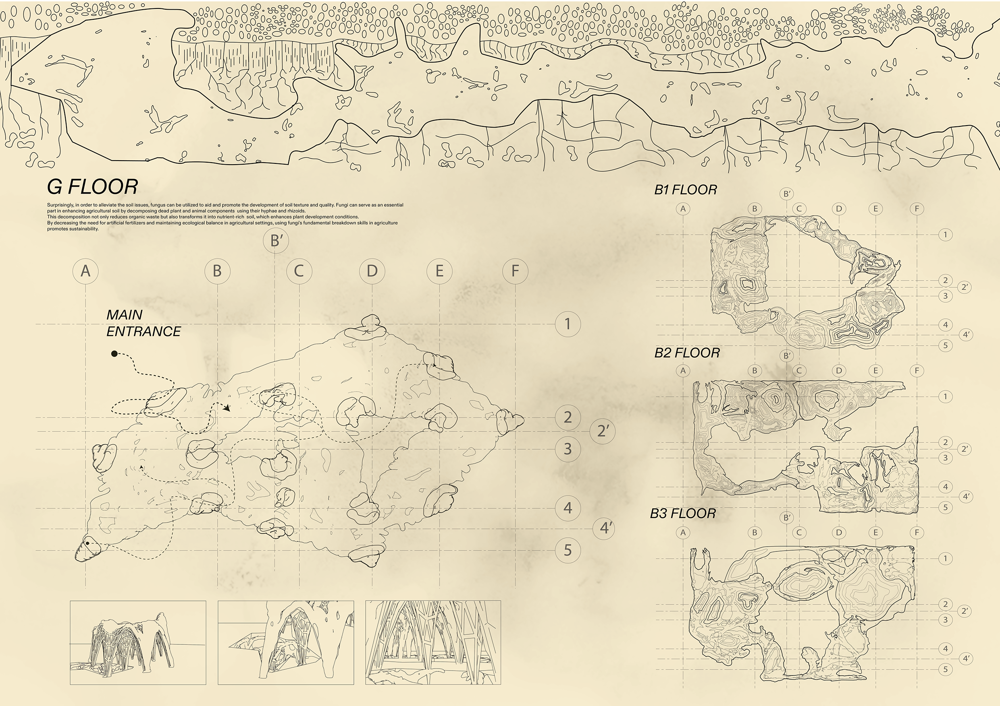
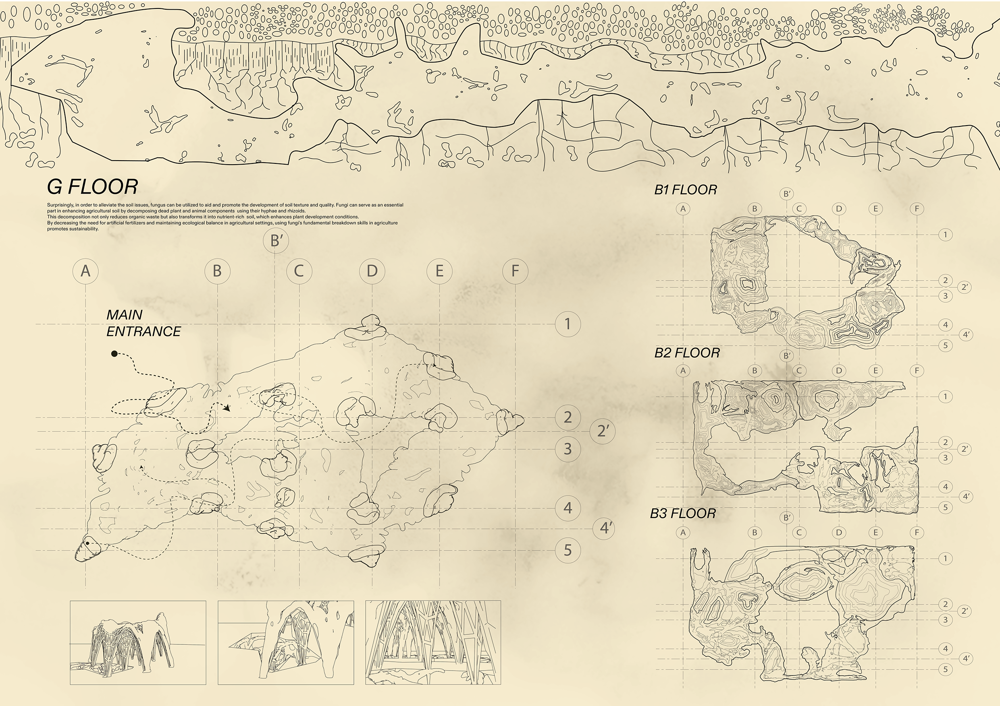

Fertile
Rhino · Grasshopper · V-Ray · Adobe Photoshop · Adobe Illustrator · Adobe InDesign
Environmental Analysis · Physical Model Making
Fertile reimagines barren urban lots as living laboratories by harnessing the hidden power of fungi. An underground “tower”—built from a biodegradable mycelium shell—is inserted between the O-horizon and C-horizon, where its hyphae merge with native mycorrhizae to enrich organic matter, improve nitrogen uptake, and rebuild soil structure over time. At the surface, modular planters, interpretive seating, and ecological walkways invite community engagement and demonstration of regenerative cycles. Combining hands-on biofabrication, ecological monitoring, and site-specific landscape interventions, Fertile showcases a creative, research-driven approach to earth-integrated infrastructure—transforming neglected ground into productive, resilient ecosystems.


 
